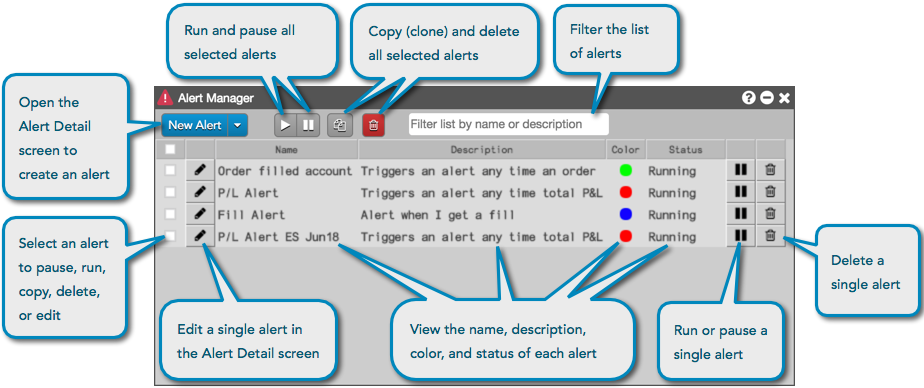
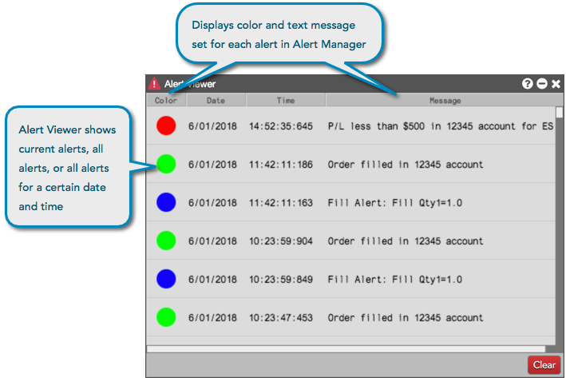

The TT platform supports creating custom alerts and sending alert notifications to your workspace and TT mobile device. Using the Alerts Manager and Alerts Viewer widgets, you can create, manage, and view your alerts.
The Alert Manager widget gives you the ability to create and manage visual, audible, and mobile alerts based on configurable logic.

You can open an Alert Detail screen from Alert Manager to create an alert. After the alert is created, it appears in the Alert Manager, which allows you to copy, edit, delete, pause, and run the alert. The Alert Manager also shows you the alert name, description, color, and alert status.
To open the Alert Manager, click Widgets | Miscellaneous | Alert Manager in the workspace menu bar.
The Alert Viewer widget displays all triggered alerts during your trading session when the viewer was open. Using the Alert Viewer, you have the option to view all historical alerts that have triggered, as well as view specific dates of when alerts have triggered. There is also a context menu option to export the alerts data to a CSV file.

To open the Alerts Viewer, click Widgets | Miscellaneous | Alert Viewer in the workspace menu bar.